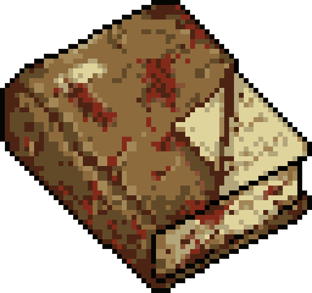

Sections

Localization Tool
How to Use
Enter your
language code
(e.g., ES, DE, RU, JP, KR)
Fill in translations for each key - English text is shown as reference
Keep placeholders like
%s
,
%d
,
%1
in your translations
Click
Export
to download your translation files
Send the files to the mod author or submit a pull request on GitHub
Language Code
Language Name
Filter
All Categories
Sandbox Options
UI Strings
Context Menu
Tooltips
Items
Recipes
Show
All
Untranslated
Translated
Progress
0/0 (0%)
Clear All
Import
Export Template
Export Files
Loading translation keys...
Export Translation Files
×
Select which files to export:
Select a file above to preview